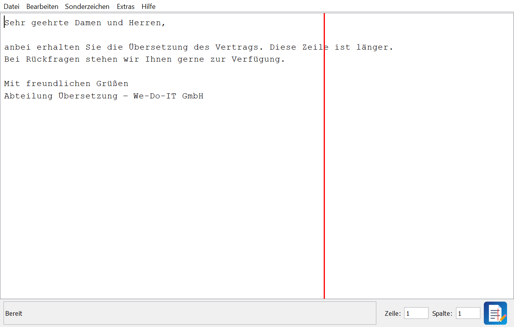
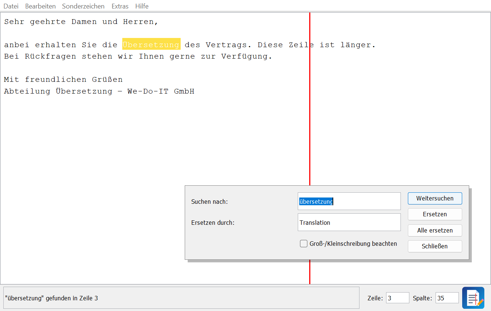
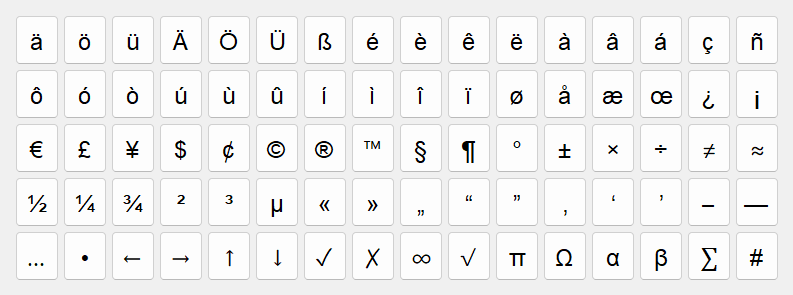

| Projekt | Entwicklung eines Texteditors (Java Swing, MVC) |
| Name | Nigar Aliyeva |
| Klasse | ITO6 |
| Abgabe | 11.11.2026 |
| Version | 1.0 |
Die Abteilung Übersetzung der We-Do-IT GmbH soll einen eigenen Texteditor bekommen. Vorgaben waren Java Swing, das MVC-Muster und die Abgabe als ausführbare .jar-Datei.
Aus dem Auftrag ergeben sich folgende Anforderungen:
| Nr. | Anforderung | Umsetzung |
|---|---|---|
| A1 | Menü mit Neu, Öffnen, Speichern, Speichern unter, Beenden | Menü Datei |
| A2 | Dateiauswahl gefiltert auf .txt, .csv, .java | JFileChooser mit FileNameExtensionFilter |
| A3 | Dateiname im Titel, Speichern anbieten | Titel „Datei - WeDoText“, * bei Änderungen, Nachfrage bei Neu/Öffnen/Beenden |
| A4 | Meldung über Erfolg/Misserfolg mit Dateigröße | Nicht editierbares Meldungsfeld in der Statusleiste |
| A5 | Zeile und Spalte anzeigen und eingeben | Zwei Felder in der Statusleiste, Enter springt zur Position |
| A6 | Rote Linie ab Spalte 60 | EditorTextArea.paintComponent |
| A7 | Suchen ab Cursor mit Shortcut und Markierung, Meldung „nicht gefunden“ / „von vorne“ | Suchdialog, Strg+F / F3, gelbe Markierung |
| A8 | Ersetzen ab Cursor | Ersetzen / Alle ersetzen, Strg+H |
| A9 | Groß-/Kleinschreibung wählbar | Checkbox im Suchdialog |
| A10 | Eigenes skalierbares Logo unten rechts (JPanel) | LogoPanel |
| A11 | Hilfe-Menü mit Copyright (Jahr, Name, Klasse) | Hilfe → Über WeDoText |
| A12 | Sonderzeichen-Menü | Menü Sonderzeichen + Tabelle (Strg+T) |
| A13 | Gängige Shortcuts | Accelerator an allen Menüeinträgen |
| A14 | Eigene Zusatzfunktion mit Beschreibung unter Hilfe | Textstatistik (Kapitel 6) |
Die Entwicklung erfolgte schrittweise. Zunächst wurden das Hauptfenster mit Textfeld und die Dateifunktionen umgesetzt. Anschließend wurden die UML-Diagramme erstellt und das Programm auf dieser Grundlage nach dem MVC-Muster umstrukturiert und erweitert.
| Zeitraum | Schritt |
|---|---|
| 09.09.2026 | Projekt angelegt, Anforderungen gesammelt |
| 14.09.2026 | Fenster, Textfeld, Speichern |
| 17.09.2026 | Öffnen, Speichern unter, Neu, Beenden, Über |
| Oktober | UML-Diagramme, Aufteilung in Model, View, Controller |
| November | Umbau nach MVC, Statusleiste, rote Linie, Suchen/Ersetzen, Sonderzeichen, Logo, Textstatistik, Tests |
Das Anwendungsfalldiagramm beschreibt die Funktionen, die dem Benutzer zur Verfügung stehen. Aus den Anwendungsfällen wurde die Menüstruktur abgeleitet.
Vor Öffnen/Neu und beim Speichern wird ggf. „Speichern anbieten“ ausgeführt. „Text ersetzen“ erweitert „Text suchen“, beide nutzen denselben Dialog.
Das Programm ist in drei Pakete aufgeteilt:
| Schicht | Klassen | Aufgabe |
|---|---|---|
| Model | EditorModel | Daten und Logik: aktuelle Datei, Änderungsstatus, Laden/Speichern, Suchalgorithmus, Textstatistik. Kennt keine Swing-Klassen und weder View noch Controller. |
| View | EditorView, EditorTextArea, LogoPanel, SearchDialog, SpecialCharDialog |
Oberfläche: Fenster, Menüs, Statusleiste, Dialoge. Enthält keine Programmlogik, sondern bietet Getter und Anzeige-Methoden an. |
| Controller | EditorController | Verbindet beides: hängt ActionListener an die Menüs und Buttons, ruft das Model auf und aktualisiert danach die View. |
| Start | Main | Erzeugt Model, View und Controller und zeigt das Fenster an. |
Beispiel Speichern: Nach einem Klick auf „Speichern“ liest der Controller den Text aus dem Textfeld und übergibt ihn an
model.save(). Anschließend gibt er die Erfolgsmeldung mit Dateigröße im Meldungsfeld der View aus.
Das Model kennt weder View noch Controller.
Main erzeugt Model, View und Controller. Ausschließlich der Controller hält Referenzen auf Model und View. Die View ist ein
JFrame und enthält Textfeld und Dialoge (Komposition). Für die rote Linie, das Logo und die Dialoge wurden
Swing-Klassen durch Vererbung erweitert: EditorTextArea erbt von JTextArea, LogoPanel von JPanel,
die Dialoge von JDialog.
Das Sequenzdiagramm zeigt den Ablauf beim Klick auf „Weitersuchen“.
Zuerst wird ab dem Cursor gesucht (4). Ohne Treffer fragt die View, ob von vorne gesucht werden soll (5, 6). Der Treffer wird markiert und der Cursor dahinter gesetzt (7, 8), danach kommt die Meldung (9).
src/editor/
├── Main.java Startpunkt, erzeugt Model, View und Controller
├── model/
│ └── EditorModel.java Daten + Logik (ohne Swing)
├── view/
│ ├── EditorView.java Hauptfenster: Menüs, Textfeld, Statusleiste
│ ├── EditorTextArea.java Textfeld mit roter Linie und Suchmarkierung
│ ├── LogoPanel.java skalierbares Logo (Java2D)
│ ├── SearchDialog.java Dialog „Suchen und Ersetzen“
│ └── SpecialCharDialog.java Sonderzeichen-Tabelle
└── controller/
└── EditorController.java Reaktion auf alle Benutzeraktionen
EditorModel model = new EditorModel(); EditorView view = new EditorView(); new EditorController(model, view); view.setVisible(true);
Main erzeugt die drei Teile und verbindet sie. Dies erfolgt in SwingUtilities.invokeLater, weil Swing-Oberflächen
im Event-Dispatch-Thread erstellt werden sollen.
view.getSaveItem().addActionListener(e -> save()); view.getFindItem().addActionListener(e -> dialog.open(false)); textArea.addCaretListener(e -> updatePosition());
Die View legt die Menüeinträge nur an (mit setAccelerator für die Shortcuts). Welche Methode beim Klick
ausgeführt wird, legt der Controller fest.
private boolean askToSave() {
if (!model.isModified()) return true;
int answer = view.askSaveChanges(); // Ja / Nein / Abbrechen
if (answer == JOptionPane.YES_OPTION) return save();
return answer == JOptionPane.NO_OPTION;
}
Die Methode wird vor Neu, Öffnen und Beenden aufgerufen. Ein DocumentListener setzt modified im Model auf true,
sobald sich der Text ändert. Beim Laden einer Datei verhindert das Attribut loading, dass das schon als Änderung zählt.
public int find(String text, String query, int from, boolean matchCase) {
for (int i = from; i <= text.length() - query.length(); i++) {
if (text.regionMatches(!matchCase, i, query, 0, query.length())) {
return i;
}
}
return -1;
}
regionMatches vergleicht den Text ab Position i mit dem Suchbegriff. Der erste Parameter heißt
„ignoreCase“, deshalb wird !matchCase übergeben. Suchen, Ersetzen und Alle ersetzen benutzen diese Methode.
int from = textArea.getCaretPosition();
int index = model.find(text, query, from, dialog.isMatchCase());
if (index < 0 && from > 0 && view.askYesNo("Suchen", "... Von vorne weitersuchen?")) {
index = model.find(text, query, 0, dialog.isMatchCase());
}
...
textArea.markText(index, index + query.length());
textArea.setCaretPosition(index);
textArea.moveCaretPosition(index + query.length());
Nach einem Treffer steht der Cursor hinter dem gefundenen Wort, dadurch findet die nächste Suche den nächsten Treffer.
Ersetzen sucht ab getSelectionStart(), damit ein gerade markierter Treffer selbst ersetzt wird.
protected void paintComponent(Graphics g) {
super.paintComponent(g);
String before = "m".repeat(EditorModel.MARK_COLUMN - 1); // 59 Zeichen
int x = getInsets().left + (int) Math.round(
getFont().getStringBounds(before, ((Graphics2D) g).getFontRenderContext()).getWidth());
g.setColor(Color.RED);
g.fillRect(x, 0, 2, getHeight());
}
Da eine Monospaced-Schrift verwendet wird, besitzen alle Zeichen dieselbe Breite. Gemessen wird die Gesamtbreite von 59 Zeichen, da einzelne Zeichen häufig keine ganzzahlige Pixelbreite haben. Eine gerundete Einzelbreite multipliziert mit 59 würde bei skalierter Bildschirmdarstellung zu einer Abweichung von mehreren Spalten führen.
int caret = textArea.getCaretPosition(); int line = textArea.getLineOfOffset(caret); int column = caret - textArea.getLineStartOffset(line); lineField.setText(String.valueOf(line + 1));
goToPosition() rechnet umgekehrt (Zeilenanfang + Spalte − 1). Zu große Werte werden begrenzt,
bei ungültigen Eingaben erscheint ein Hinweis im Meldungsfeld.
g.translate(x, y); g.scale(size / 100.0, size / 100.0); // gezeichnet wird in 0..100 g.fill(new RoundRectangle2D.Double(0, 0, 100, 100, 26, 26));
Das Logo ist keine Bilddatei, sondern wird mit Java2D gezeichnet. Durch scale passt es sich jeder Größe an:
40 px in der Statusleiste, 16 bis 128 px als Fenstersymbol und 96 px im Über-Dialog.
byte[] bytes = Files.readAllBytes(file.toPath());
return new String(bytes, StandardCharsets.UTF_8).replace("\r\n", "\n");
...
Files.writeString(file.toPath(), text.replace("\n", System.lineSeparator()), StandardCharsets.UTF_8);
Mit UTF-8 bleiben Umlaute und Sonderzeichen erhalten. Eine IOException fängt der Controller ab und zeigt
eine Fehlermeldung an.
Start mit Doppelklick auf WeDoText.jar oder mit java -jar WeDoText.jar (Java 21 nötig).

Unten links steht das Meldungsfeld, rechts daneben Zeile und Spalte. Durch Eingabe einer Zahl und Bestätigung mit Enter wird der Cursor an die angegebene Position gesetzt. Ein * im Titel bedeutet, dass es ungespeicherte Änderungen gibt.
| Menü | Funktionen |
|---|---|
| Datei | Neu, Öffnen, Speichern, Speichern unter, Beenden. Der Dateidialog zeigt .txt, .csv und .java. Ohne Endung wird .txt angehängt. Vor Neu, Öffnen und Beenden wird bei Änderungen nachgefragt. |
| Bearbeiten | Rückgängig, Wiederholen, Ausschneiden, Kopieren, Einfügen, Alles markieren, Suchen, Weitersuchen, Ersetzen, Gehe zu Zeile |
| Sonderzeichen | Häufige Zeichen direkt, dazu eine Tabelle mit 80 Zeichen. Ein Klick fügt das Zeichen am Cursor ein. |
| Extras | Textstatistik |
| Hilfe | Tastenkürzel, Beschreibung der Zusatzfunktion, Über (Copyright) |

Strg+F öffnet den Dialog. Gesucht wird ab dem Cursor, der Treffer wird gelb markiert und F3 springt zum nächsten. Am Ende fragt das Programm, ob von vorne gesucht werden soll. Ist „Groß-/Kleinschreibung beachten“ nicht aktiviert, wird „welt“ auch als „Welt“ gefunden. Ersetzen ersetzt den nächsten Treffer ab dem Cursor, Alle ersetzen alle bis zum Textende.

| Kürzel | Funktion | Kürzel | Funktion |
|---|---|---|---|
| Strg+N | Neu | Strg+F | Suchen |
| Strg+O | Öffnen | F3 | Weitersuchen |
| Strg+S | Speichern | Strg+H | Ersetzen |
| Strg+Umschalt+S | Speichern unter | Strg+G | Gehe zu Zeile |
| Strg+Q | Beenden | Strg+T | Sonderzeichen-Tabelle |
| Strg+Z / Strg+Y | Rückgängig / Wiederholen | Strg+I | Textstatistik |
| Strg+X / C / V | Ausschneiden / Kopieren / Einfügen | F1 | Hilfe |
| Strg+A | Alles markieren | Esc | Suchdialog schließen |
Über Extras → Textstatistik (Strg+I) zeigt der Editor die Anzahl der Wörter, Zeichen (mit und ohne Leerzeichen) und Zeilen, die längste Zeile, wie viele Zeilen über Spalte 60 hinausgehen und eine geschätzte Lesezeit. Die Funktion unterstützt die Abteilung Übersetzung, da Übersetzungen häufig nach Wortanzahl abgerechnet werden. Die Beschreibung steht unter Hilfe → Zusatzfunktion.
Die Berechnung liegt im Model in getStatistics(text). Wörter werden mit split("\\s+")
gezählt, Zeichen ohne Leerzeichen mit replaceAll("\\s", ""). Der Controller übergibt nur den Text
und gibt das Ergebnis an die View weiter.
| Nr. | Test | Erwartet | Ergebnis |
|---|---|---|---|
| 1 | Text eingeben | * im Titel | OK |
| 2 | Neues Dokument speichern | Speichern-unter-Dialog, danach Meldung mit Bytes | OK |
| 3 | Dateiname ohne Endung | wird als .txt gespeichert | OK |
| 4 | Ändern und Fenster schließen | Nachfrage Ja/Nein/Abbrechen | OK |
| 5 | Datei mit Umlauten öffnen | Umlaute korrekt | OK |
| 6 | Zeile 3, Spalte 10 + Enter | Cursor springt dorthin | OK |
| 7 | Buchstaben im Feld Zeile | Hinweis im Meldungsfeld | OK |
| 8 | Zeile mit 70 Zeichen | rote Linie zwischen Zeichen 59 und 60 | OK |
| 9 | „übersetzung“ suchen, ohne Groß/Klein | „Übersetzung“ gefunden und markiert | OK |
| 10 | Gleiche Suche mit Groß/Klein | nicht gefunden | OK |
| 11 | Weitersuchen nach letztem Treffer | Frage „von vorne“ | OK |
| 12 | Ersetzen, Begriff nicht vorhanden | Meldung „nicht gefunden“ | OK |
| 13 | Sonderzeichen € anklicken | € an Cursorposition | OK |